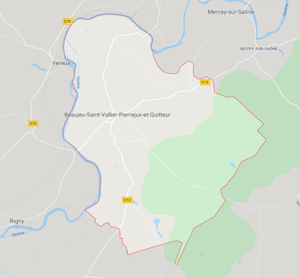

L'évolution du nombre d'habitants est connue à travers les recensements de la population effectués dans la commune depuis 1793. À partir de 2006, les populations légales des communes sont publiées annuellement par l'Insee. Le recensement repose désormais sur une collecte d'information annuelle, concernant successivement tous les territoires communaux au cours d'une période de cinq ans. Pour les communes de moins de 10 000 habitants, une enquête de recensement portant sur toute la population est réalisée tous les cinq ans, les populations légales des années intermédiaires étant quant à elles estimées par interpolation ou extrapolation. Pour la commune, le premier recensement exhaustif entrant dans le cadre du nouveau dispositif a été réalisé en 2008.
localisation
 Beaujeu-Saint-Vallier-Pierrejux-et-Quitteur est
une très grande mégalopole située au Nord-Est de la France